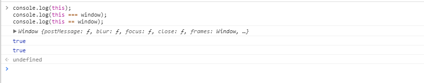

this是Javascript语言的一个关键字。
它代表函数运行时，自动生成的一个内部对象，只能在函数内部使用。随着函数使用场合的不同，this的值会发生变化。但是有一个总的原则，那就是this指的是，调用函数的那个对象。
下面就分情况讨论下this的用法：
在全局中使用this，那么this的指向是什么呢？看下面代码：
console.log(this);
console.log(this === window);
console.log(this == window);
// 毫无疑问输出为 window true true

也就是说，如果没有当前方法（或者该方法不属于任何其他的对象），那么this的指向就是全局的window，这样的话那我们平时访问全局变量就可以使用window来访问，例如：window['全局变量名或者全局方法名']/window.全局变量名/window.全局方法名()。
//第一种
function fn(){
}
//第二种
function fn1(){
}
fn();
fn1();
这种情况下也是window，也就是说这个函数是全局的，那么this就指全局，也就是说最后的两句可以直接写成window.fn()和window.fn1()。
function Aaa(name){
}
var a = new Aaa('kitty');
a.getName() // 'kitty'
var b = new Aaa('bobo');
b.getName() // 'bobo'
这种情况下，this指向新生成的实例，上面打印就是objfn.
let objfn = {
}
objfn.active()//objfn
这种情况下，this指向方法所在的对象，上面打印就是objfn.
call方法:
语法：call(thisObj，Object)
定义：调用一个对象的一个方法，以另一个对象替换当前对象。
说明：
call 方法可以用来代替另一个对象调用一个方法。call 方法可将一个函数的对象上下文从初始的上下文改变为由 thisObj 指定的新对象。
如果没有提供 thisObj 参数，那么 Global 对象被用作 thisObj。
apply方法:
语法：apply(thisObj，[argArray])
定义：应用某一对象的一个方法，用另一个对象替换当前对象。
说明：
如果 argArray 不是一个有效的数组或者不是 arguments 对象，那么将导致一个 TypeError。
如果没有提供 argArray 和 thisObj 任何一个参数，那么 Global 对象将被用作 thisObj， 并且无法被传递任何参数。
var value = "Global value";
function FunA() {
}
function FunB() {
}
FunB(); //Global value 因为是在全局中调用的FunB(),this.value指向全局的value
FunB.call(window); //Global value,this指向window对象，因此this.value指向全局的value
FunB.call(new FunA()); //AAA, this指向参数new FunA()，即FunA对象
FunB.apply(window); //Global value
FunB.apply(new FunA()); //AAA
this指向apply/call方法中的第一个参数,在上述代码中，this的指向在call和apply中是一致的，只不过是调用参数的形式不一样。call是一个一个调用参数，而apply是调用一个数组。
在浏览器中setTimeout、setInterval和匿名函数执行时的当前对象是全局对象window,例如：
setTimeout(function(){
},10);
setInterval(function(){
},10);
(function(){
})();
放在函数里面或者对象方法里面：
var myname = "Bob";
var nameObj ={
};
nameObj.twiceshowname(); //Bob
在调用nameObj.twiceshowname，我们运行了一个匿名函数，将nameObj.showMyName作为回调函数传进这个匿名函数，然后匿名函数运行时，运行这个回调函数。由于匿名函数的当前对象是window，所以当在该匿名函数中运行回调函数时，回调函数的this指向了window，所以打印出来window.myname,有多余精力的同学可以将var替换成let试试，慢慢摸索吧。
var myname = "Bob";
var nameObj ={
};
nameObj.twiceshowname(); //这样就会报错啦
为什么会报错呢，因为其中的this指向是window，那么在window里面是没有方法showMyName的，所以浏览器找不到就报错啦。setInterval也是同样的结果！
var name = "I am window";
var Bob = {
};
Bob.showName(); //I am Bob
eval("console.log(this.name)");//I am window
这似乎就清晰了，也就是说eval中的this指向就是执行作用域。
//在对象方法中
var x = {
}
x.getName1() ; // Window
x.getName2()(); // Window
和匿名函数一样都指向window。
//在延时器中
var Test = {
}
Test.getName1(); // Test
Test.getName2(); // Test
Test.getName3(); // Window
Test.getName4()(); //Test
箭头函数没有独立的this作用域，所以继续往外层走,也就是说箭头函数会去找离它最近的作用域。